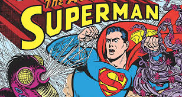

Each week, as a new Superman related comic is released, the Superman Homepage will post up reviews on the comics. The comics usually come out each Wednesday, but in order to give you time to read the comics yourself, I will aim to post the review on the Monday following the comic's release. Be forewarned, these reviews do contain "spoilers", so it is recommended you read the comic before reading its review.
We also review other comics, such as Justice League, aswell as other Superman related comics and Specials such as Graphic Novels, Annuals and Prestige Format Mini-series.
As a special bonus, we've also reviewed a whole stack of older Superman comics, dating back more than 75 years!